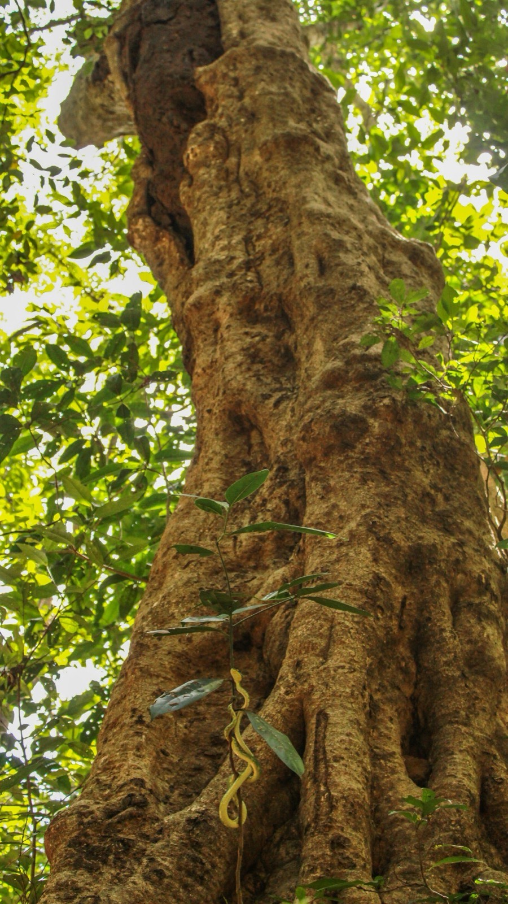
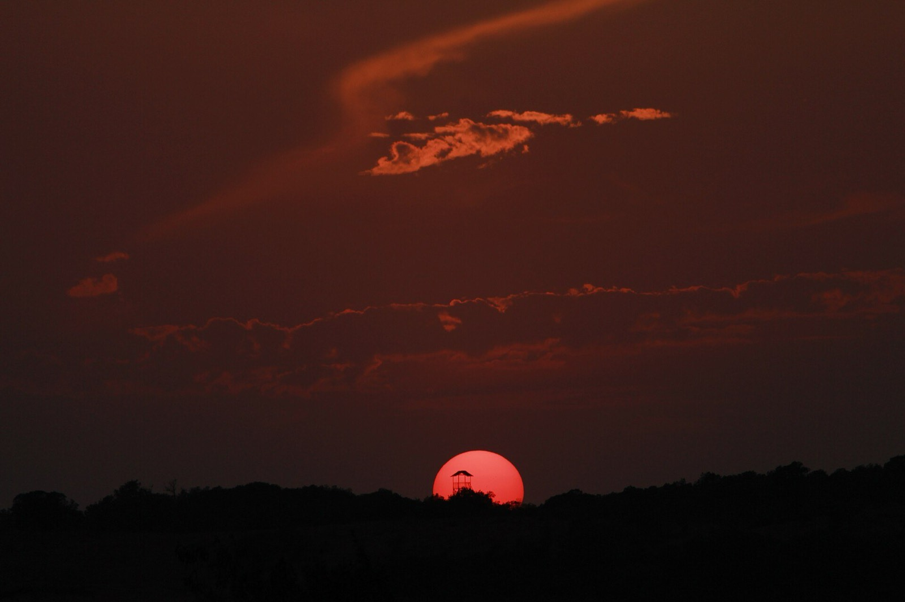
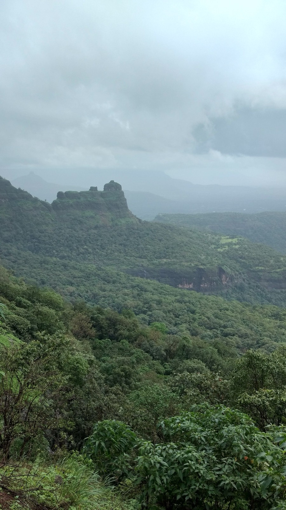

What
At Saidongar in Karjat taluka, on the western edge of Bhimashankar sanctuary, 32,000+ trees on about 233 ha are reportedly being felled for a 3,000 MW pumped-storage power project.
Live issue · October 2026
A cloud forest on the crest of the Sahyadri, the birthplace of the Bhima river, the home of Maharashtra's state animal. And right next to it, 32,000 trees marked to fall.
In brief · 30 seconds
At Saidongar in Karjat taluka, on the western edge of Bhimashankar sanctuary, 32,000+ trees on about 233 ha are reportedly being felled for a 3,000 MW pumped-storage power project.
This forest is the Shekru's canopy, the catchment of the Pej and Ulhas rivers, and it holds landslide-prone Sahyadri slopes together. Adivasi villages live here.
Government: the site is outside the sanctuary, the project is green, trees will be planted. Citizens: a forest doesn't stop at a line — publish the studies, hear the people first. The case is going to the Green Tribunal.
Sign the petition, send the ready-made letter to the government, and share this story on WhatsApp.
Sign now →
High on the crest of the Western Ghats, where the Deccan plateau suddenly falls away to the Konkan coast, there is a forest that makes its own weather.
For four months of monsoon, clouds sit inside the trees. Moss and orchids cover every branch. When the clouds lift, the Bhima river trickles out of these hills and begins a ~860-km journey east to the Krishna.
To protect this place, and the giant squirrel that lives in its canopy, the Government of Maharashtra notified the Bhimashankar Wildlife Sanctuary on 10 October 1985. It spreads across Ambegaon and Khed talukas of Pune district, reaching into Thane and Raigad.
At its heart stands the Bhimashankar temple, one of the twelve Jyotirlingas, so this forest was sacred to millions long before it was a "sanctuary" on a map.


Chapter 02
शेकरू — महाराष्ट्राचा राज्यप्राणी

The Indian giant squirrel (Ratufa indica elphinstonei) is a squirrel the size of a cat, nearly a metre from nose to the tip of its tail, rust and black and cream. It is Maharashtra's state animal, and this sanctuary was created for it.
A Shekru almost never touches the ground. It builds several leafy nests high in the canopy and leaps up to six metres between crowns. Its whole world is a continuous roof of trees.

Chapter 03
From a botanical survey published in the Journal of Threatened Taxa (2017), and sanctuary records.
Every flowering plant recorded at Bhimashankar is one dot here. Tap the buttons to see how many grow only in India, and how many are threatened.
Source: Journal of Threatened Taxa (2017). Dot layout is illustrative.
Chapter 04
keep scrolling →
Giant squirrel. State animal. Lives its life in the canopy.

Found only in the Western Ghats. A fruit-eater that plants the forest as it flies.

The "whistling schoolboy" — its human-like whistle carries along the forest streams.

Damp, mossy undergrowth where green pit vipers wait, perfectly still, for hours.

Silhouetted against the sun, photographed inside the sanctuary.

One of the 1,142 flowering plants recorded here, many found nowhere else.
A world hidden in every leaf — one footpath, countless lives.
A woody giant in the sanctuary was estimated in 1984 to be 800–1,000 years old. Older than most forts in the Sahyadri.
On monsoon nights, fungi on rotting wood glow green. Before the rains, millions of fireflies blink in sync.
Mammals that need unbroken forest to move between feeding grounds and water.
Chapter 05

Before the first rain, the forest floor lights up. Thousands of visitors come just for this.
Heavy rain soaks the hills. Streams feed the Bhima to the east and the Konkan rivers to the west.

Mornings above a sea of mist; the valleys fill with cloud and the ridges float.

Leaves fall, fruits ripen, and every patch of water becomes a lifeline for wildlife.
Films
Drone films and shorts, with thanks to the creators who filmed this forest. Videos play from YouTube.



Chapter 06
The forest is not empty. Mahadeo Koli and Katkari Adivasi families have lived in and around it for generations.
Their devrai, or sacred groves, are patches no one cuts because they belong to the deity. Fourteen of them survive inside the sanctuary, some holding the oldest trees in the landscape.
Women's self-help groups collect and sell Bhimashankar honey; villages like Yelavali run homestays for trekkers. The Katkari are recognised as a Particularly Vulnerable Tribal Group. Decisions about this forest are decisions about their lives.
Chapter 07 · Understand the issue
Slogans aside, in five steps: where, what, how much, when, and your questions.
Bhimashankar sanctuary sits on the Sahyadri crest (Pune district). To its west, the escarpment drops straight into the Konkan, into Karjat taluka of Raigad. The project site is on these slopes, around the villages of Potal, Saidongar and Ambot.
The Pej river, which rises here, joins the Ulhas. The Ulhas flows on towards Badlapur, Kalyan and Thane, a drinking-water source for millions.
Schematic map; the project location is approximate.
The project is a giant "water battery". In the day, when solar power is plentiful, water is pumped from a lower dam up to a lake on the hilltop. In the evening, when demand peaks, the same water is let down through turbines to make power.
Central Electricity Authority records place the upper reservoir on a table-top hill in the Pej catchment and the lower reservoir across the Pej river. The forested hilltop goes under water, and the river goes behind a dam.
Storage like this matters for clean energy. The question is not the technology, it's the location. Felling old forest at a sanctuary's edge for green energy is a contradiction.
The big square is the 233 hectares of forest reported in the news. Pick something to see how many fit inside:
The project's environmental-clearance filings give a total project area of 377 hectares.
Football pitch ≈ 0.71 ha, Shivaji Park ≈ 11.3 ha.
Bhimashankar Wildlife Sanctuary notified to protect the Shekru.
Maharashtra signs an MoU with Torrent Power for pumped storage.
Executive summary for the project's public hearing published by the Pollution Control Board.
Equipment contracts announced for "India's largest pumped-storage plant".
MLA Rohit Pawar alleges 32,000+ trees felled. Forest Dept: no illegal felling inside the sanctuary.
CM: project is eco-friendly, plantation will be done, a "fake narrative".
Ulhas river action committee moves the National Green Tribunal.
The Tribunal hearing. Until then, felling should pause. That is our ask.
According to the Forest Department, no: the site is outside the boundary. But Shekru, leopards and birds don't follow lines on a map. Forest on a sanctuary's edge is its buffer; lose it and the forest inside is exposed too.
Yes, it's useful for storing solar and wind power. But such plants can also be built on existing dams or barren land ("closed-loop"). Cutting old natural forest for a "green" project gets the maths backwards.
A sapling is not a forest. A hundred-year-old tree with its moss, orchids, fungi, nests and soil life takes decades, sometimes centuries, to come back. And compensatory planting often happens in a different district altogether.
The figure comes from allegations and news reports and hasn't been independently verified. That's why our first ask is: publish the impact assessment and tree count. With real numbers, the debate can rest on facts.
In heavy rain, Sahyadri slopes are held together by tree roots. Disasters like Malin (2014) and Irshalwadi (2023) happened in this same range. Tunnel blasting and bare slopes can raise that risk, hence the call for an independent study.
1) Sign the petition below. 2) Email the ready-made letter. 3) Share this link in your WhatsApp groups. 4) Ask your MLA and MP about it. 5) Visit Bhimashankar, respectfully.
Chapter 08 · The cut
This is a model of a forest plateau like the one at Saidongar, in Karjat taluka of Raigad district, on the western edge of the Bhimashankar landscape. Keep scrolling.
Torrent Power has proposed a pumped-storage hydroelectric project here, estimated at ₹13,500–15,000 crore. Two reservoirs, tunnels through the hill, and water pumped up and let down to store power.
Permission has been sought to fell more than 32,000 trees, reported as about 233 hectares (~600 acres) of forest. That's roughly 326 football pitches.
The site lies in the valley of the Pej river, a tributary of the Ulhas, which supplies drinking water to towns downstream. Activists warn of water scarcity.
Tunnel blasting in these hills worries locals who remember Malin (2014) and Irshalwadi (2023), villages buried by landslides in the Sahyadri.
Compensatory plantation has been promised. But a planted sapling is not a cloud forest with moss, fungi, hornbills and a continuous canopy that took centuries to grow.
Chapter 09
Facts matter more than slogans. Here's what has been reported, 24–27 October 2026.
Our view: a forest doesn't stop at a boundary line. Wildlife, water and hillsides on the edge of a sanctuary are part of the same living system. Before a single more tree falls, the studies should be public and the people living there should be heard.
The petition